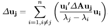

| 1.Title of the paper | Assessing and Altering Robustness of Large Graphs |
| 2. Noise Model - How did they perturb the network (did they provide an algorithm). | Two manipulation problems to degrade graph robustness is edge and node removal (respectively called MIOBI-BREAKEDGE and MIOBI-BREAKNODE) improve robustness via edge addition (called MIOBI-MAKEEDGE) |
| 3. What data sets did they use (also the number of edges and vertices) | Large graphs, with near-linear complexity in time and space, datasets of various domains like email, P2P, Internet AS topology. --http://snap. stanford.edu/data/ |
| 4. What property/measures of network are they looking at | Nodes, edges, undirected unipartite irreducible graphs, connectivity, subgraph centrality, redundancy (alternative paths between the nodes), clustering coefficient, |
| 5. How do they measure the difference in results | Evaluated the proposed methods on a long list of real-world datasets across various domains for effectiveness and scalability |
| 6. Are there theoretical results--write the theorems | Lemma1 Given a perturbation ∆A to a matrix A, its eigenvalues can be updated by ∆λj = uj’∆Auj. Lemma2 Given a perturbation ∆A to a matrix A, its eigenvectors can be updated by  Lemma 3 Complexity of MIOBI-BREAKEDGE: The time cost of Alg .1 is O (kmt+ knt2). The space cost of Alg. 1 is O (m + nt + k) Lemma4 Complexity of MIOBI-BREAKNODE: The time cost of Alg .2 is O (kmt+ knt2). The space cost is O (m + nt + k). Lemma5 Complexity of MIOBI-MAKEEDGE: The time cost of Alg.3 is O (mt+ kd2maxt + knt2). The space cost is O (m + nt + k). |
| 7. What are the main conclusions--find it in the abstract and the conclusion | Proposal: -Analyze list of proposed robustness measures (natural connectivity) -Formulate three graph manipulation problems involving node and edge deletions to degrade, and edge additions to improve the robustness of a given graph (Make It or Break It) -Propose the first principled alteration algorithms that directly optimize the corresponding robustness measure Conclusion: Proposed effective, scalable, and adaptive algorithms to solve above problems which are founded on a principled framework based on theoretical foundations. |